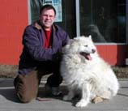
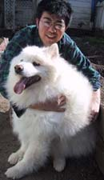
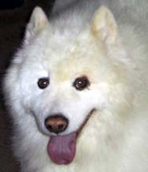

The Best of Times, the
Worst of Times
March, 2004
This president's message is covering the past two months, which can be
summarized by the title above, with credit to Dickens.
Without a doubt, Westminster is a not -to-be-missed
event for those involved with dog SHOWING heavy emphasis on the SHOW. The
green carpet of Madison Square Garden that you see on television is carved
into five to six rings for the breed judging. The working dogs hardly had
the chance to take more than three to four strides before they were
cornering. I don't quite comprehend how the judges can make an accurate
assessment in those conditions, but they seem to manage to make their
choices. The press of people, particularly in the benching area is
incredible. It took us over 20 minutes to make our way through the crowd for
the distance of about a block.
However, for all those aspects, there's a certain fever that gets into
your blood. You find yourself eyeing the crowd for celebrities. Catching the
buzz on those favored to win their group. Making a fool of yourself in
front of a roomful of strangers playing Eukanubas Family FOOD to win a
coupon for a bag of dog food (hmmmm. maybe that was the white wine buzz.).
Then there's the magic of New York City itself. Another not -to-be-missed,
but so glad I don't live there!
From that fun and excitement to a heartbreaking homecoming the best of
times, the worst of times. The constant is those friendships that support
and sustain us all as we face the challenges both with our animals and our
families. My thanks to all of you for your condolences for Cassie and
prayers for my father.
Most recently, we have learned of the passing of Roger Blue and Lee
Wasenske Our hearts go out to these gentlemen's families. Another reminder
of the preciousness of this life we share with one another and our dogs.
Another reminder to take those moments to say what needs to be said, do what
needs to be done and love unabashedly. Join me in honoring those who are no
longer with us by sharing this legacy.
Cheri
Introducing MADISON
Kathy and Ron were notified that there was an old
Sammy girl at the Tacoma Humane Society. Kathy visited her and saw a quiet,
very sweet girl who shouldn't cause any trouble around the house. She was
scheduled to be put to sleep the next day if they received no word. She is
about 10 years old, possibly even older and therefore the SCWS guidelines
say she is too old to take into rescue, but Ron and Kathy felt she still had
a lot of love to give and deserved a home. The call went out to the NW
Samoyed Rescue List and the question was asked if anybody would be willing
to
 take
the Tacoma girl into their home to spend her last years in a loving home
with someone who cares about Sammies. She had been seen by the Humane
Society vet, who reported that she does appear to have some medical issues.
First, she is very much overweight, has stiffness in her hips, and has
trouble standing up. She is missing some teeth, appears to have dry eye, and
has a tumor on one eyelid that the vet says is probably benign. We don't
want to minimize her condition, which will require some degree of expense.
There were four inquiries in response to the plea. Carey and Kaz met Kathy
at the shelter and took Tacoma Girl home with them and here is their
story.
Well, we got the ole girl home. "Stinky" is doing
O.K. and getting along fine with the other two dogs, even "J" the Devil-Dog/Shiba
is being civil, and that's a miracle in itself!
She's in pretty tough shape for the old gal that she is.A follow up with our
vet next week will more then likely reveal unpleasant information in regards
to her current health, but we'll see.I see mostly younger, healthy, show dog
quality Samoyeds being exhibited in all their glory and beauty.The best of
the best. Seeing the spirit of a Samoyed like this locked away in this aging
tired body is a tough pill to swallow. Even for the most hardened soul I'm
sure.But seeing the sparkle in her old eyes and the smile that only a
Samoyed can radiate has further shown Kaz and I that we made the right
 decision
in bringing her home with us. As hard as this might end up being in the end,
don't hesitate to notify us in a similar situation. I'd do it again. This
breed deserves at least that much from each and everyone of us. Rescue does
what it can for placeable dog's and it's up to the rest of us to do our very
best to pick up the pieces that fall through the cracks. It reconfirms in
our hearts and soul as a loyal Samoyed owned person's that no Sammy (or
animal for that matter) should ever have to live their final days on a cold
concrete floor in a raw and alien environment. I hope every person involved
with Samoyeds will love and cherish this breed as much as we do, and not
just the "Best in Show" guys and gals but the ones on the other end of the
road, the ones that are down and
out. They give us nothing but Love, Joy and their undying loyalty until the
very bitter end and ask for little in return (well, unless you're
Cheyenne.... what, just one cookie...?).
We will take her in the first of the week for a health check and maybe a lab
work-up to get a better understanding of her condition. My general
observation would make me believe that her prognosis, although not grave at
the moment may not be favorable in the near future I'm afraid. We'll get her
some medication to help make her more comfortable at the very least and
follow the recommendations from the Vet as prescribed to the best of our
ability. As stated by Ron and Kathy she is very overweight (85 lbs) and has
much discomfort from hip/joint pain and has a very difficult time moving
about. If possible on the recommendations from our Vet, we will modify our
BARF diet that we already use with our other dogs. We hope she can drop some
weight that will improve her over all health as best as we can. We currently
have to assist her in getting outside due to the pain that she has in her
hips.Just getting up of the floor is difficult or her. She also has a bad
cough and thick yellow discharge that maybe is more then just Kennel Cough.
We also found some rather large, deep baseball side growths hidden under her
matted hair that looks to be more then just fatty tissue.
 In
any case if this ends up being more like a Hospice situation we will both
make her as comfortable as possible until further.... Treatment needs to be
administered (I hate to even say the word).
Thanks to Ron and Kathy for bringing her to our attention and everyone else
that stepped up to the plate to make sure the right thing would take place
for one of our own fallen comrades.
Until later... here are some pictures of the new improved Tacoma Girl that
we affectionately call..... "Girl Friend"
We'll remind her everyday how special she is, how pretty she is and let her
know she'll never spend another day of her life on a cold nasty concrete
floor, alone.
Halitosis, also called bad breath, foul breath,
malodor, foetor ex ore, and fetor oris is defined as an offensive odor
emanating from the oral cavity. Bad breath is a common pet odor complaint.
Causes may be oral (most common) or extraoral (rare).
The
sour milk odor accompanying periodontal disease may result from the
bacterial population associated with plaque, calculus, unhealthy tissues,
decomposing food particles retained within the oral cavity, or the rotten
meat odor emanating from tissue necrosis. Contrary to common belief, neither
normal lung air or stomach aroma contributes to halitosis.
The most common cause of halitosis is periodontal
disease caused by plaque (bacteria). Bacteria is attracted to the pellicle
(an acellular film formed from the precipitation of salivary glycoproteins).
In the freshly cleaned and polished tooth a glycoprotein layer forms over
the tooth as soon as the patient starts to salivate. Bacteria attaches to
the pellicle within 6-8
hours. Within days, the plaque becomes mineralized producing calculus. As
plaque ages and gingivitis develops into periodontitis (bone loss),
the bacterial flora changes from a predominantly non-motile
gram-positive
aerobic coccoid flora to a more motile, gram-negative
anaerobic population including: Bacteroides, Fusobacterium, and Actinomyces
species.
Calculuss rough surface attracts more bacteria while
irritating the free gingiva. As the inflammation continues, the gingival
sulcus is pathologically transformed into a periodontal pocket. The pocket
accumulates putrefied food debris, bacterial breakdown products, and
resorbing bone leading to halitosis. The primary cause of malodor is gram
negative anaerobic bacterial putrefaction causing the generation of volatile
sulfur compounds (VSC), such as hydrogen sulfide, methyl mercaptan, and
dimethyl sulfide. The volatile sulfur compounds also may play a role in
periodontal disease affecting the integrity of the tissue barrier allowing
endotoxins to produce periodontal destruction.
Most patients suffering from halitosis have oral
causes, the remaining are caused by, dermatologic, metabolic, respiratory,
or gastrointesinal disease.
|
 January-February, 2004
January-February, 2004
December, 2003
November, 2003
October, 2003
August-September, 2003
July, 2003
May/June, 2003
April, 2003
March, 2003
February, 2003
January, 2003
November/December, 2002
October, 2002
September, 2002
August, 2002
July, 2002
June, 2002
May, 2002
April, 2002
February, 2002
January, 2002
December, 2001
November, 2001
October, 2001
September, 2001
July-August, 2001
June, 2001
May, 2001
April, 2001
March, 2001
February, 2001
January, 2001
December, 2000
Current Newsletter
SCWS Home Page

FastCounter by bCentral
| |